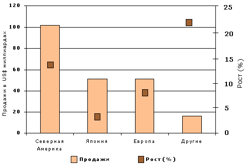

По сообщению IMS HEALTH Drug Monitor за 2000 год розничные продажи фармацевтической продукции на 13 ключевых мировых рынках выросли на 9% и составили $221,6 млрд.
По сообщению IMS HEALTH Drug Monitor за 2000 год розничные продажи фармацевтической продукции на 13 ключевых мировых рынках выросли на 9% и составили $221,6 млрд. Наибольшие темпы роста отмечены на рынках Северной Америки, Австралии/Новой Зеландии и Латинской Америки. Анализ рынка проводился в США и Канаде; Германии, Франции, Италии, Великобритании, Испании; Японии; Аргентине, Бразилии, Мексике; Австралии и Новой Зеландии.

Распределение продаж фармацевтической продукции
на мировых рынках в 2000 г.
В Северной Америке темпы роста розничных продаж они составили 13%, фармацевтической продукции здесь продано на $102,9 млрд. В Канаде продажи выросли на 16% и достигли $5,5 млрд. Среди пяти наиболее продаваемых классов лекарственных средств (ЛС) наибольший рост в 18% отмечен для ЛС, влияющих на центральную нервную систему (ЦНС), в основном за счёт противосудорожных средств.
Рост продаж на 5 крупнейших Европейских рынках составил 8%. В Германии продажи выросли на 6%, а в Великобритании и Италии упали на 10% и 6% соответственно. Среди пяти наиболее продаваемых классов ЛС на Европейских рынках наибольший рост в 11% также отмечен для ЛС, влияющих на ЦНС.
В Японии продажи фармацевтической продукции составили $51,4 млрд, рост продаж в 3% является здесь наименьшим за последние 2 года.
На трёх рынках Латинской Америки продажи выросли на 10% и составили $13,48 млрд. Такой рост обусловлен, главным образом, ростом продаж в Бразилии и Мексике, прирост здесь составил 7% и 22% соответственно.
Розничные продажи антимикробных препаратов на 13 ключевых мировых рынках выросли на 4%, и составили $21, 941 млрд. Наибольшие темпы роста (8%) отмечены для рынков Северной Америки, продажи составили $9,714 млрд. На рынках Европы антибиотиков продано на $ 4,492 млрд, что на 4% больше чем за предыдущий год.
IMS HEALTH
News